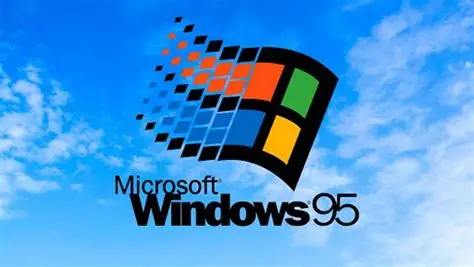
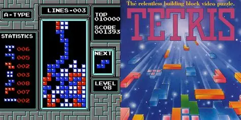
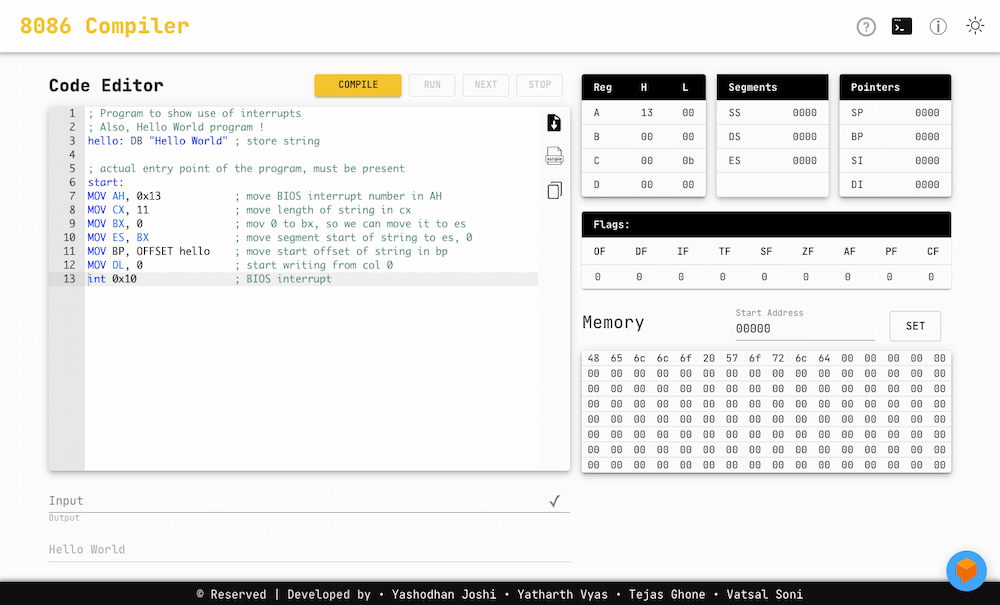
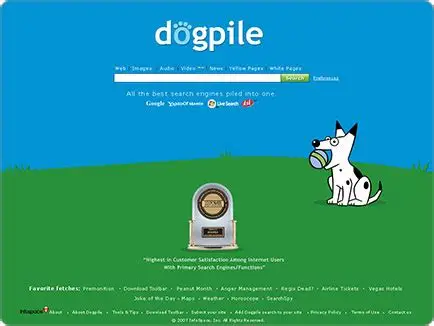
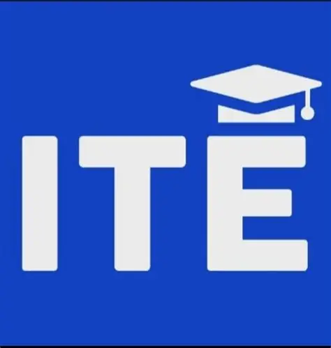

Google 95 can refer to Google Chrome version 95, a major browser update released in 2021. It included security fixes, performance improvements, and new features for a faster, safer browsing experience.
Tetris is a classic puzzle game where geometric shapes called tetrominoes fall from the top of the screen. Players must rotate and move them to fill horizontal lines.The game speeds up over time, making it increasingly challenging.
8086 Online Emulator is a web tool that lets you run and test Intel 8086 assembly programs in a browser, helping users learn and practice low-level programming without needing a physical CPU.
Dogpile is a metasearch engine that combines results from multiple search engines like Google, Yahoo, and Bing. It aims to give more comprehensive search results by pulling from several sources at once.
ITE: A course or program that teaches the fundamental concepts of computers, software, networking, and basic IT skills for troubleshooting and system maintenance.Professor Lounis teaches this course with great expertise.
 - Copy.png)
you can also access
the dead calculator